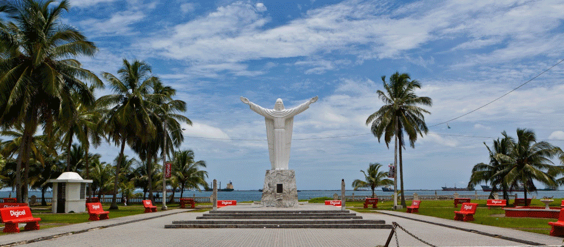
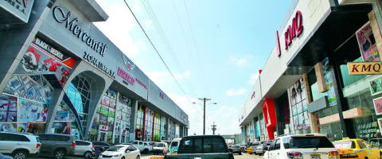
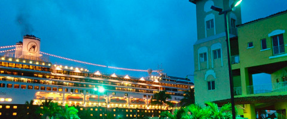
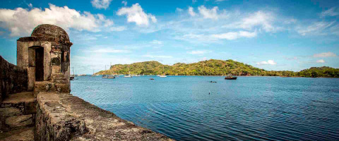
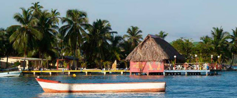

|  |
Colón es una provincia con gran auge turístico gracias a sus hermosas playas, resorts, centro de compras para turistas como lo es la Zona Libre de Colón, puerto de cruceros, islas y muchos otros atractivos turísticos más.
La Provincia de Colon esta situada en el Caribe a la entrada del Canal de Panamá, a sólo 55 minutos por carretera desde el Pacífico, es el principal puerto para el tráfico de casi toda la mercancía de importación y reexportación del país. En importancia, Colón es la segunda ciudad de la República, pero por su comercio, muy bien podría orgullosamente ser la capital.
|  |  |
|  |  |
Tiene una superficie de 4.868,4 km². Su población estimada es de 227,592 habitantes y su densidad es de 46,7 habitantes por km² (2004). En su territorio se localiza la sección norte del Canal de Panamá. Limita al Norte con el Mar Caribe, al Sur con las provincias de Panamá y Coclé, al Este con la Comarca de Kuna Yala y al Oeste con la provincia de Veraguas.